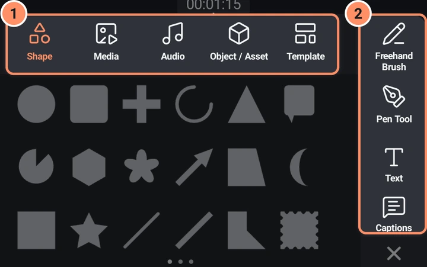
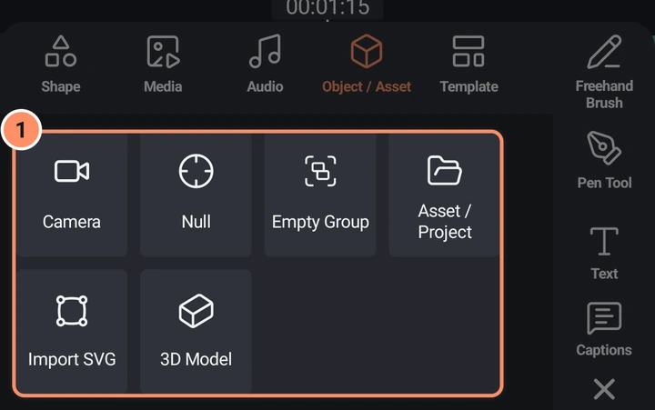

Ang menu na Add
Paano magdagdag ng mga hugis, larawan, bidyo, tunog, teksto, guhit, kamera, ilaw, 3D model at iba pa.
Ang bilog na + button sa kanang ibaba ng timeline area ay nagbubukas ng menu na Add. Lumalabas lang ito kapag walang seleksyon; kapag pumili ka ng layer, napapalitan ito ng tool grid.
Nagsisimula ang mga bagong layer sa playhead at tumatagal ayon sa setting na Tagal ng bagong layer (2 segundo bilang default). Ang mga larawan at hugis ay gumagamit ng tagal na iyon; ang mga bidyo at tunog ay gumagamit ng sarili nilang tagal. Ang mga camera at light layer ay tumatagal sa buong proyekto.
Ang menu ay may mga tab sa itaas (Hugis, Media, Audio, Object / Asset at Template) at apat na quick button sa kanan. I-swipe pakaliwa ang hanay ng mga tab para ipakita ang isa pang tab, Mga tool, pagkatapos ng Template. Isinasara ito ng X.

Mga quick button
- Ang Freehand na brush ay gumagawa ng drawing layer at nagbubukas ng drawing editor. Tingnan ang Mga hugis, pagguhit at mask.
- Ang Pen tool ay gumagawa ng shape layer at nagbubukas ng point editor para makaguhit ka ng hugis punto por punto.
- Ang Teksto ay nagdadagdag ng text layer at agad na nagbubukas ng text editor. Tingnan ang Teksto at mga font.
- Binubuksan ng Mga kapsyon ang sheet na Awtomatikong kapsyon. Tingnan ang Mga AI tool.
Hugis
Limampu't apat na ready-made na hugis, anim bawat row, sa mga page na ini-swipe mo. I-tap ang isa para idagdag ito sa gitna ng canvas na may random na magandang kulay.
Labinsiyam na hugis ang parametric at ini-edit gamit ang Mga opsyon sa hugis: Bilog, Bilugang parihaba, Plus, Arko, Tatsulok, Callout, Pie, Polygon, Multifoil, Arrow, Quad, Buwan, Parihaba, Bituin, Linya, Malapad na linya, Hindi regular na pentagon, Selyo at Patak. Ang iba pang tatlumpu't lima ay iginuhit gamit ang mga punto at ini-edit gamit ang I-edit ang mga punto: Puso, Ulap, Kidlat, Tsek, Ekis, Singsing, Bubble ng usapan, Kalasag, Bahay, Bookmark, Watawat, Crescent at bituin, Araw, Dahon, Pagsabog ng selyo, Outline ng hexagon, Outline ng bituin, Chevron, Dobleng palaso, Kurbadong palaso, Paralelogram, Trapesoyd, Tiket, Tag, Korona, Mata, Payong, Nota ng musika, Pares ng patak, Susi, Pin ng lokasyon, Bilog na play, Pause, Plaka at Gear.
Media
Ang iyong mga larawan at bidyo, pinakabago muna, sa isang grid. I-tap ang isa para idagdag ito, naka-size para magkasya sa canvas.
- Binubuksan ng Tingnan lahat ang sariling photo picker ng Android. Hindi ito nangangailangan ng permiso.
- Ang Mula sa Files, ang unang tile ng grid, ay nagbubukas ng file picker ng Android para makapili ka ng larawan o bidyo mula sa kahit anong folder. Hindi rin ito nangangailangan ng permiso.
- Sinasala ng listahan ng album sa itaas ang grid (ang default ay Lahat).
- Binubuksan ng Kamera ang in-app na kamera. Tingnan ang Paglikha ng proyekto para sa mga kontrol ng kamera.
- Naghahanap sa grid ang Maghanap ("Maghanap ng mga larawan at bidyo").
- Ang mga SVG file mula sa iyong gallery ay lumalabas din dito.

Sa unang pagkakataon, humihingi ang Android ng permiso para makita ang iyong mga larawan at bidyo. Sa Android 14 at mas bago, maaari mong payagan lamang ang mga pinili mo. Bilang default, nagtatabi ang app ng kopya ng idinagdag na media sa loob ng proyekto, kaya gumagana pa rin ang proyekto kung buburahin mo ang orihinal mamaya.
Audio
Musika at tunog na naka-store sa iyong telepono. Sa unang pagkakataon, humihingi ang app ng permiso para magbasa ng audio file.
- Binubuksan ng Tingnan lahat ang file picker para sa mga audio file.
- Ang Mula sa Files ay nagbubukas ng file picker ng Android, para makapili ka ng audio file mula sa kahit anong folder. Hindi ito nangangailangan ng permiso.
- Ginagawang boses ng Teksto sa boses ang nai-type na teksto: tingnan ang Audio.
- I-tap ang sound tile para marinig ito, at i-tap muli para itigil. I-tap ang + strip sa ibaba ng tile para idagdag ito sa proyekto sa playhead.
- Tumutugma ang Maghanap ng musika at tunog sa pamagat, pangalan ng file, album at artist.
Object / Asset
Pitong tile para sa iba pang uri ng layer.
- Ang Kamera ay nagdadagdag ng camera layer na tumatagal sa buong proyekto. Tingnan ang Mga camera layer at 3D.
- Ang Ilaw ay nagdadagdag ng ilaw na nagbibigay ng shading sa mga 3D model at sa mga piraso ng 3D na epekto. Tingnan ang Mga camera layer at 3D.
- Ang Null ay nagdadagdag ng invisible helper layer. Gamitin ito bilang parent ng ibang layer o bilang target para sa motion tracking.
- Ang Walang laman na grupo ay nagdadagdag ng grupong walang laman.
- Ang Asset / Proyekto ay naglilista ng iyong mga naka-save na asset, pagkatapos ang iba mong proyekto. I-tap ang isa para i-insert ito bilang grupo sa playhead. Ang asset ay nananatiling naka-link sa source nito; ang proyekto ay ini-insert bilang independent na kopya. Tingnan ang Mga asset, template at preset.
- Ang I-import ang SVG ay nagbubukas ng file picker para sa mga
.svgfile (hanggang 16 MB). Ang isang hugis ay nagiging shape layer; ang marami ay nagiging grupo. Naglilista ang isang mensahe ng mga hindi ma-import: teksto, larawan, embedded na content, animation, clipping path, mask, filter, marker, dashed o gradient stroke at pattern fill. Ang mga gradient ay pinapanatili lamang ang una at huling kulay. - Ang 3D na modelo ay nagbubukas ng file picker para sa mga
.obj,.glbat.gltffile. Piliin kasama ang material at picture file ng modelo kung mayroon ito. Ang mga file ay maaaring umabot hanggang 256 MB sa kabuuan, at ang modelong may higit sa 50,000 triangles ay ipinapakita sa pinasimpleng anyo.

Template
Ang Tingnan lahat ay nagpapakita ng full-screen grid ng iyong mga naka-save na template, at sa ibaba nito ay may tile ang bawat template. Ang pag-tap sa isa ay nagbubukas ng screen kung saan papalitan mo ng sarili mong media. Kapag wala pang template, sinasabi ng page na "Wala rito. Dito lalabas ang mga proyektong sina-save mo bilang template." Tingnan ang Mga asset, template at preset.
Mga tool
I-swipe pakaliwa ang mga tab at i-tap ang Mga tool. Nagbubukas ito ng parehong mga tool na nasa tab na Mga tool sa Home screen nang hindi umaalis sa editor: I-compress, I-trim, I-extract ang audio, Gumawa ng GIF, ang Downloader ng bidyo, I-enhance ang larawan, ang importer para sa mga link ng proyekto at QR code, at Ipadala sa pagitan ng mga device, na nagpapadala ng bukas na proyekto. Itinatakda sa Mga setting > Mga tool o gamit ang sliders button sa page na Mga tool kung aling mga tool ang lalabas at sa anong pagkakasunod-sunod. Kapag tapos na ang isang tool, inilalagay ng Idagdag sa proyekto ang resulta nito sa proyekto bilang bagong layer sa playhead (ang mga tunog ay napupunta sa sound layer); sine-save pa rin ito ng I-save sa gallery. Sa computer, ang mga tool ay nasa ilalim ng Mga tool sa ibaba ng kaliwang sidebar.